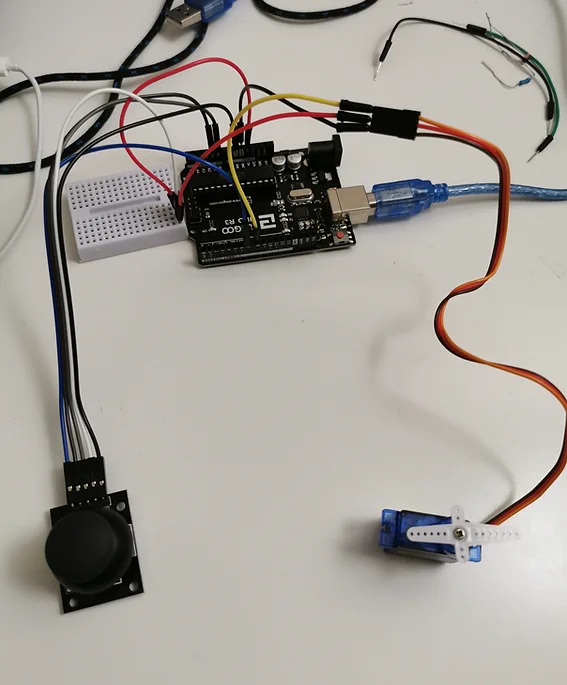

This project represents a joystick that is programmed using Arduino. The main goal of this project was to apply all the skills and concepts related to programming and coding to generate a joystick supported by Arduino that is widely used in industry and especially in the engineering domain. The concept of it is similar to some concepts applied in robotics and automation but on a smaller scale.
